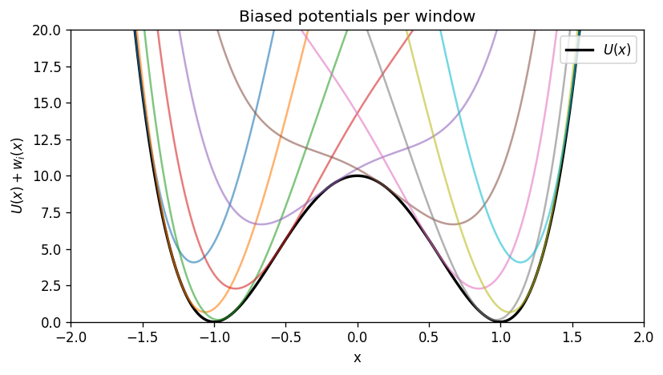
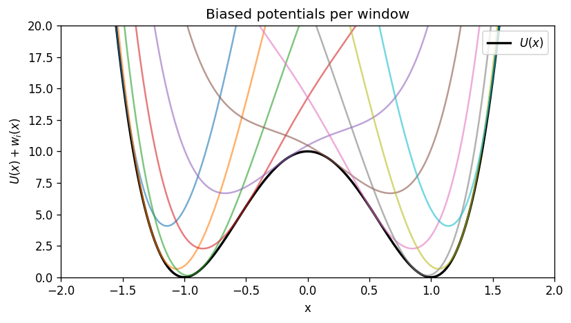

WHAM, step by step (with plots)#
This notebook is a standalone, conceptual + hands-on walkthrough of the Weighted Histogram Analysis Method (WHAM).
You will learn:
What the unbiased PMF is, and how it relates to probability.
What an umbrella bias does to the sampled distribution.
How WHAM combines many biased histograms into one optimal estimate of \(P(x)\).
How overlap between windows controls whether WHAM succeeds.
We use a 1D toy model so everything is easy to visualize.
1) The PMF and probability#
Let \(x\) be a reaction coordinate (collective variable). The potential of mean force (PMF) is defined from the equilibrium probability density \(P(x)\):
For a true 1D system with potential energy \(U(x)\) at temperature \(T\),
so the PMF differs from \(U(x)\) only by an additive constant.
In real molecular systems (many hidden degrees of freedom), \(F(x)\) is a free energy, not just the potential energy.
import numpy as np
import matplotlib.pyplot as plt
rng = np.random.default_rng(0)
k_B = 1.0
T = 1.0
beta = 1.0 / (k_B * T)
plt.rcParams['figure.dpi'] = 120
# Beginner-friendly runtime switch
FAST_MODE = True
print(f"FAST_MODE = {FAST_MODE} (set to False for higher-statistics runs)")
2) Define a toy system: a double-well#
We choose a symmetric double-well potential:
This has two minima near \(x=\pm 1\) separated by a barrier near \(x=0\).
a = 10.0
def U(x):
return a * (x**2 - 1.0) ** 2
# Discretize x for plotting + for binned WHAM later
x_min, x_max = -2.2, 2.2
n_grid = 1201 if FAST_MODE else 2001
x_grid = np.linspace(x_min, x_max, n_grid)
dx = x_grid[1] - x_grid[0]
# True (unbiased) distribution on the grid and the corresponding PMF
p_true_unnorm = np.exp(-beta * U(x_grid))
P_true = p_true_unnorm / np.trapz(p_true_unnorm, x_grid)
F_true = - (1.0/beta) * np.log(P_true)
F_true -= np.min(F_true)
plt.figure(figsize=(7, 4))
plt.plot(x_grid, U(x_grid), label=r'$U(x)$')
plt.plot(x_grid, F_true, '--', label=r'True PMF $F(x)$ (shifted)')
plt.xlabel('x')
plt.ylabel('energy')
plt.ylim(0,20)
plt.xlim(-2, 2)
plt.title('Toy double-well: potential and PMF')
plt.grid(True, alpha=0.3)
plt.legend()
plt.tight_layout()
plt.show()
/tmp/ipython-input-1115161054.py:14: DeprecationWarning: `trapz` is deprecated. Use `trapezoid` instead, or one of the numerical integration functions in `scipy.integrate`.
P_true = p_true_unnorm / np.trapz(p_true_unnorm, x_grid)

3) Umbrella sampling biases#
Umbrella window \(i\) adds a harmonic bias centered at \(x_{0,i}\):
That window samples the biased distribution
A key WHAM assumption is that windows have overlap in \(x\) so the method can stitch them together.
# Umbrella parameters
num_windows = 10
k_umb = 30.0
centers = np.linspace(-1.6, 1.6, num_windows)
def w_i(x, x0):
return 0.5 * k_umb * (x - x0) ** 2
# Plot the biases and biased potentials
plt.figure(figsize=(7, 4))
for x0 in centers:
plt.plot(x_grid, w_i(x_grid, x0), alpha=0.6)
plt.xlabel('x')
plt.ylabel(r'bias $w_i(x)$')
plt.title('Harmonic umbrella biases')
plt.ylim(0,20)
plt.xlim(-2, 2)
# plt.grid(True, alpha=0.3)
plt.tight_layout()
plt.show()
plt.figure(figsize=(7, 4))
plt.plot(x_grid, U(x_grid), color='k', lw=2, label=r'$U(x)$')
for x0 in centers:
plt.plot(x_grid, U(x_grid) + w_i(x_grid, x0), alpha=0.6)
plt.xlabel('x')
plt.ylabel(r'$U(x)+w_i(x)$')
plt.title('Biased potentials per window')
plt.ylim(0,20)
plt.xlim(-2, 2)
# plt.grid(True, alpha=0.3)
plt.legend(loc='upper right')
plt.tight_layout()
plt.show()
 

Interactive sliders: see WHAM work in real time#
Use these sliders to change umbrella setup and immediately see:
the biased histograms (overlap),
the overlap heatmap,
the reconstructed PMF vs the true PMF,
the WHAM convergence trace,
and which window contributes where.
If widgets do not render, you likely need ipywidgets enabled in your Jupyter environment.
# Interactive WHAM playground (requires ipywidgets)
try:
import ipywidgets as widgets
from IPython.display import display
except Exception as e:
widgets = None
print("ipywidgets is not available in this environment.")
print("Error:", e)
def _expected_counts_from_bin_mass(p_mass, n_samples):
# Deterministic integer counts with exact total n_samples.
p_mass = np.asarray(p_mass, dtype=float)
p_mass = p_mass / np.sum(p_mass)
raw = p_mass * n_samples
base = np.floor(raw).astype(int)
remainder = int(n_samples - np.sum(base))
if remainder > 0:
frac = raw - base
add_idx = np.argsort(frac)[-remainder:]
base[add_idx] += 1
return base
def wham_playground(
k_umb=30.0,
num_windows=9,
center_range=1.6,
n_bins=120,
n_per_window=20000,
):
# Grids/bins
bin_edges = np.linspace(x_min, x_max, int(n_bins) + 1)
bin_centers = 0.5 * (bin_edges[1:] + bin_edges[:-1])
bin_width = bin_edges[1] - bin_edges[0]
centers = np.linspace(-float(center_range), float(center_range), int(num_windows))
def w_local(x, x0):
return 0.5 * float(k_umb) * (x - x0) ** 2
# True PMF on bin centers
P_true_centers = np.interp(bin_centers, x_grid, P_true)
P_true_centers = P_true_centers / (np.sum(P_true_centers) * bin_width)
F_true_centers = -(1.0 / beta) * np.log(P_true_centers)
F_true_centers -= np.min(F_true_centers)
# Compute biased densities on the fine grid, then integrate into bin masses
bin_index = np.clip(np.digitize(x_grid, bin_edges) - 1, 0, len(bin_centers) - 1)
N_ij = np.zeros((len(centers), len(bin_centers)), dtype=int)
u_ij = np.zeros((len(centers), len(bin_centers)), dtype=float)
# For plots (downsample windows if too many)
max_plot_windows = 12
plot_ids = np.linspace(0, len(centers) - 1, min(len(centers), max_plot_windows), dtype=int)
for i, x0 in enumerate(centers):
# reduced bias on bin centers
u_ij[i] = beta * w_local(bin_centers, x0)
# biased density on x_grid
p = np.exp(-beta * (U(x_grid) + w_local(x_grid, x0)))
p = p / np.trapz(p, x_grid)
# integrate p(x) over each bin to get probability mass
p_mass = np.zeros(len(bin_centers))
for j in range(len(bin_centers)):
mask = bin_index == j
p_mass[j] = np.sum(p[mask]) * dx
p_mass = p_mass / np.sum(p_mass)
N_ij[i] = _expected_counts_from_bin_mass(p_mass, int(n_per_window))
n_i = np.sum(N_ij, axis=1)
# Run WHAM using the solver defined later in the notebook if present.
# If not, use a local minimal version.
if 'run_wham' in globals():
P_wham, f_wham, delta_hist = run_wham(N_ij, n_i, u_ij, max_iter=10000, tol=1e-10)
else:
import warnings
def _run_wham_local(N_ij, n_i, u_ij, max_iter=20000, tol=1e-8):
f_i = np.zeros(len(n_i))
P_j = np.sum(N_ij, axis=0).astype(float)
P_j /= np.sum(P_j)
delta = []
for _ in range(max_iter):
f_old = f_i.copy()
denom = np.sum(n_i[:, None] * np.exp(f_i[:, None] - u_ij), axis=0)
numer = np.sum(N_ij, axis=0)
P_new = numer / np.maximum(denom, 1e-300)
P_new /= np.sum(P_new)
P_j = P_new
with warnings.catch_warnings():
warnings.simplefilter('ignore', category=RuntimeWarning)
Z_i = np.sum(P_j[None, :] * np.exp(-u_ij), axis=1)
f_i = -np.log(Z_i)
f_i -= f_i[0]
d = float(np.max(np.abs(f_i - f_old)))
delta.append(d)
if d < tol:
break
return P_j, f_i, np.array(delta)
P_wham, f_wham, delta_hist = _run_wham_local(N_ij, n_i, u_ij)
# PMF from WHAM (P_wham is probability mass per bin)
F_wham = -(1.0 / beta) * np.log(np.maximum(P_wham, 1e-300))
F_wham -= np.min(F_wham)
rmse = float(np.sqrt(np.mean((F_wham - F_true_centers) ** 2)))
# Overlap matrix (Bhattacharyya coefficient) from histogram masses
p_ij = N_ij / np.sum(N_ij, axis=1, keepdims=True)
BC = np.sqrt(p_ij[:, None, :] * p_ij[None, :, :]).sum(axis=2)
# Stitching view: window contribution fractions c_ij
weights = n_i[:, None] * np.exp(f_wham[:, None] - u_ij)
Cij = weights / np.sum(weights, axis=0, keepdims=True)
# --- Plots ---
fig, axes = plt.subplots(2, 2, figsize=(10, 7))
ax = axes[0, 0]
ax.plot(x_grid, U(x_grid), color='k', lw=2, label=r'$U(x)$')
ax.plot(bin_centers, F_true_centers, 'k--', lw=2, label='true PMF (binned)')
ax.set_title('True potential & PMF')
ax.set_xlabel('x')
ax.set_ylabel('energy')
ax.grid(True, alpha=0.3)
ax.legend(fontsize=9)
ax = axes[0, 1]
ax.plot(bin_centers, F_true_centers, 'k--', lw=2, label='true')
ax.plot(bin_centers, F_wham, lw=2, label=f'WHAM (RMSE={rmse:.3f})')
ax.set_title('PMF reconstruction')
ax.set_xlabel('x')
ax.set_ylabel('PMF (shifted)')
ax.grid(True, alpha=0.3)
ax.legend(fontsize=9)
ax = axes[1, 0]
for i in plot_ids:
dens = N_ij[i] / (n_i[i] * bin_width)
ax.plot(bin_centers, dens, alpha=0.7)
ax.set_title('Biased histograms (subset)')
ax.set_xlabel('x')
ax.set_ylabel('density')
ax.grid(True, alpha=0.3)
ax = axes[1, 1]
ax.semilogy(delta_hist)
ax.set_title('WHAM convergence')
ax.set_xlabel('iteration')
ax.set_ylabel(r'max $|\Delta f_i|$')
ax.grid(True, which='both', alpha=0.3)
plt.tight_layout()
plt.show()
# Heatmaps in a second figure
fig2, axes2 = plt.subplots(1, 2, figsize=(10, 4))
ax = axes2[0]
im = ax.imshow(BC, origin='lower', vmin=0, vmax=1, cmap='viridis')
fig2.colorbar(im, ax=ax, label='Bhattacharyya overlap')
ax.set_title('Window overlap')
ax.set_xlabel('window')
ax.set_ylabel('window')
ax = axes2[1]
im2 = ax.imshow(Cij, aspect='auto', origin='lower',
extent=[bin_centers[0], bin_centers[-1], 0, len(centers)-1],
cmap='magma')
fig2.colorbar(im2, ax=ax, label='contribution $c_{ij}$')
ax.set_title('WHAM stitching view')
ax.set_xlabel('x')
ax.set_ylabel('window')
plt.tight_layout()
plt.show()
ENABLE_WIDGET_PLAYGROUND = False # set True when using this notebook interactively in Jupyter
if widgets is not None and ENABLE_WIDGET_PLAYGROUND:
ui = widgets.VBox([
widgets.FloatSlider(value=30.0, min=1.0, max=120.0, step=1.0, description='k_umb'),
widgets.IntSlider(value=9, min=3, max=25, step=2, description='num_windows'),
widgets.FloatSlider(value=1.6, min=0.6, max=2.2, step=0.1, description='center_range'),
widgets.IntSlider(value=120, min=50, max=220, step=10, description='n_bins'),
widgets.IntSlider(value=6000, min=2000, max=30000, step=1000, description='n/window'),
])
out = widgets.interactive_output(
wham_playground,
{
'k_umb': ui.children[0],
'num_windows': ui.children[1],
'center_range': ui.children[2],
'n_bins': ui.children[3],
'n_per_window': ui.children[4],
},
)
display(ui, out)
else:
print('Interactive widget playground skipped in batch execution. Set ENABLE_WIDGET_PLAYGROUND=True to enable it.')
4) What the biased PMFs look like#
Each window has its own PMF (up to an additive constant) computed from the biased probability \(P_i(x)\):
In this 1D example, \(F_i(x)\) follows \(U(x)+w_i(x)\) (again, up to a constant).
# Compute biased distributions exactly on the grid
P_biased = []
for x0 in centers:
p = np.exp(-beta * (U(x_grid) + w_i(x_grid, x0)))
p /= np.trapz(p, x_grid)
P_biased.append(p)
P_biased = np.array(P_biased) # (n_win, n_grid)
plt.figure(figsize=(7, 4))
for i, x0 in enumerate(centers):
plt.plot(x_grid, P_biased[i], label=f'i={i}, x0={x0:.2f}', alpha=0.7)
plt.xlabel('x')
plt.ylabel(r'$P_i(x)$ (biased)')
plt.title('Biased probability densities per window')
plt.xlim(-2, 2)
plt.ylim(bottom=0)
# plt.grid(True, alpha=0.3)
plt.tight_layout()
plt.show()
# Biased PMFs (shift each to its own minimum for visualization)
plt.figure(figsize=(7, 4))
for i, x0 in enumerate(centers):
Fi = - (1.0/beta) * np.log(P_biased[i])
Fi -= np.min(Fi)
plt.plot(x_grid, Fi, alpha=0.7)
plt.xlabel('x')
plt.ylabel(r'$F_i(x)$ (shifted)')
plt.ylim(0,20)
plt.xlim(-2, 2)
plt.title('Biased PMFs per window (each shifted)')
# plt.grid(True, alpha=0.3)
plt.tight_layout()
plt.show()
/tmp/ipython-input-3465796573.py:5: DeprecationWarning: `trapz` is deprecated. Use `trapezoid` instead, or one of the numerical integration functions in `scipy.integrate`.
p /= np.trapz(p, x_grid)
5) Create synthetic umbrella data (samples)#
To keep the focus on WHAM (not dynamics), we generate independent samples from each biased distribution \(P_i(x)\).
We will:
choose WHAM bins,
draw \(n_i\) samples per window,
build the histogram counts \(N_{ij}\).
# WHAM binning
n_bins = 120
bin_edges = np.linspace(x_min, x_max, n_bins + 1)
bin_centers = 0.5 * (bin_edges[1:] + bin_edges[:-1])
# Sample counts per window
n_per_window = 5000 if FAST_MODE else 20000
# Precompute biased probability mass per bin for sampling
# (integrate P_i(x) over each bin approximately via the grid)
bin_index = np.clip(np.digitize(x_grid, bin_edges) - 1, 0, n_bins - 1)
Pmass = np.zeros((num_windows, n_bins))
for i in range(num_windows):
for j in range(n_bins):
mask = bin_index == j
Pmass[i, j] = np.sum(P_biased[i, mask]) * dx
Pmass[i] /= np.sum(Pmass[i])
# Draw samples by first choosing a bin then uniformly within the bin
samples = []
for i in range(num_windows):
chosen_bins = rng.choice(n_bins, size=n_per_window, p=Pmass[i])
x_lo = bin_edges[chosen_bins]
x_hi = bin_edges[chosen_bins + 1]
x_samp = x_lo + rng.random(n_per_window) * (x_hi - x_lo)
samples.append(x_samp)
n_i = np.array([len(s) for s in samples], dtype=int)
# Histogram counts N_ij
N_ij = np.zeros((num_windows, n_bins), dtype=int)
for i in range(num_windows):
N_ij[i], _ = np.histogram(samples[i], bins=bin_edges)
# Plot window histograms (densities)
bin_width = bin_edges[1] - bin_edges[0]
plt.figure(figsize=(7, 4))
for i in range(num_windows):
dens = N_ij[i] / (n_i[i] * bin_width)
plt.plot(bin_centers, dens, alpha=0.65)
plt.xlabel('x')
plt.ylabel('density (biased)')
plt.xlim(-2,2)
plt.ylim(bottom=0)
plt.title('Synthetic umbrella histograms (check overlap)')
plt.grid(True, alpha=0.3)
plt.tight_layout()
plt.show()

Overlap diagnostic (Bhattacharyya coefficient)#
A compact overlap metric between window histograms is
where \(p_{ij}\) is the histogram probability mass in bin \(j\) for window \(i\).
p_ij = np.zeros_like(N_ij, dtype=float)
for i in range(num_windows):
if n_i[i] > 0:
p_ij[i] = N_ij[i] / np.sum(N_ij[i])
BC = np.zeros((num_windows, num_windows), dtype=float)
for i in range(num_windows):
for k in range(num_windows):
if np.sum(p_ij[i]) > 0 and np.sum(p_ij[k]) > 0:
BC[i, k] = np.sum(np.sqrt(p_ij[i] * p_ij[k]))
plt.figure(figsize=(6.2, 5.2))
plt.imshow(BC, origin='lower', vmin=0, vmax=1, cmap='viridis')
plt.colorbar(label='Bhattacharyya overlap')
plt.title('Window overlap (higher is better)')
plt.xlabel('window')
plt.ylabel('window')
plt.tight_layout()
plt.show()
if num_windows >= 2:
nn = [BC[i, i+1] for i in range(num_windows-1)]
print(f"Nearest-neighbor overlap: min={min(nn):.3f}, median={np.median(nn):.3f}, max={max(nn):.3f}")
Nearest-neighbor overlap: min=0.117, median=0.846, max=0.900
6) The WHAM equations (written clearly)#
WHAM is easiest to understand if we separate three ideas:
What each window samples (biased ensemble)
What we want (the unbiased \(P(x)\) or PMF)
How WHAM combines windows optimally (self-consistent normalization)
6.1 Biased vs. unbiased probability#
Unbiased equilibrium probability density:
Umbrella window \(i\) adds bias \(w_i(x)\), so the biased density is
6.2 Discretize into histogram bins#
We bin \(x\) into bins \(j=1,\dots,N_{\mathrm{bins}}\) with centers \(x_j\) and width \(\Delta x\). From window \(i\) we measure histogram counts \(N_{ij}\) and total samples \(n_i=\sum_j N_{ij}\).
Define the reduced bias in bin \(j\):
We estimate the unbiased probability mass per bin
(If you want a density, use \(p(x_j)\approx P_j/\Delta x\).)
6.3 The WHAM self-consistent equations (binned form)#
WHAM solves for \(\{P_j\}\) and per-window constants \(\{f_i\}\) (in units of \(k_B T\)).
The coupled equations are:
and
Notes:
The numerator \(\sum_i N_{ij}\) is the total counts in bin \(j\) across windows.
The denominator reweights those counts by the window bias at \(x_j\).
\(f_i\) is defined up to an additive constant; we set \(f_0=0\).
6.4 PMF from WHAM#
Once \(P_j\) is known, the reconstructed PMF is
where \(C\) is arbitrary (we shift the minimum to 0 for plotting).
import warnings
def run_wham(N_ij, n_i, u_ij, max_iter=20000, tol=1e-8):
'''Return (P_j, f_i, delta_f_hist).'''
N_ij = np.asarray(N_ij)
n_i = np.asarray(n_i)
u_ij = np.asarray(u_ij)
n_win, n_bins = N_ij.shape
# init
f_i = np.zeros(n_win)
P_j = np.sum(N_ij, axis=0).astype(float)
if np.sum(P_j) <= 0:
raise ValueError('No counts in any bin.')
P_j /= np.sum(P_j)
delta_hist = []
for it in range(max_iter):
f_old = f_i.copy()
# Update P_j
denom = np.sum(n_i[:, None] * np.exp(f_i[:, None] - u_ij), axis=0)
numer = np.sum(N_ij, axis=0)
P_new = np.zeros_like(P_j)
ok = denom > 1e-300
P_new[ok] = numer[ok] / denom[ok]
s = np.sum(P_new)
if s <= 0:
raise RuntimeError('WHAM collapsed: sum(P_new) <= 0 (likely zero overlap).')
P_j = P_new / s
# Update f_i
with warnings.catch_warnings():
warnings.simplefilter('ignore', category=RuntimeWarning)
Z_i = np.sum(P_j[None, :] * np.exp(-u_ij), axis=1)
f_i = -np.log(Z_i)
f_i -= f_i[0]
delta = float(np.max(np.abs(f_i - f_old)))
delta_hist.append(delta)
if delta < tol:
break
return P_j, f_i, np.array(delta_hist)
# Reduced bias energies u_ij = beta*w_i(x_j)
u_ij = np.zeros((num_windows, n_bins))
for i, x0 in enumerate(centers):
u_ij[i] = beta * w_i(bin_centers, x0)
P_wham, f_wham, delta_hist = run_wham(N_ij, n_i, u_ij, max_iter=5000, tol=1e-10)
print('WHAM iterations:', len(delta_hist))
print('max |Δf| final:', delta_hist[-1])
WHAM iterations: 2121
max |Δf| final: 9.957457081100074e-11
7) Reconstructed PMF vs the true PMF#
We compare WHAM’s reconstructed PMF to the analytically computed PMF for the toy model.
Important: both PMFs are only defined up to an additive constant, so we shift them to have minimum 0.
# Convert WHAM bin probabilities to a PMF
F_wham = - (1.0/beta) * np.log(P_wham)
F_wham -= np.min(F_wham)
# True PMF evaluated at bin centers (from the exact P_true on the grid)
P_true_centers = np.interp(bin_centers, x_grid, P_true)
P_true_centers /= np.sum(P_true_centers) * (bin_edges[1] - bin_edges[0]) # renormalize as density
F_true_centers = - (1.0/beta) * np.log(P_true_centers)
F_true_centers -= np.min(F_true_centers)
plt.figure(figsize=(7, 4))
plt.plot(bin_centers, F_true_centers, 'k--', lw=2, label='true PMF (binned)')
plt.plot(bin_centers, F_wham, lw=2, label='WHAM PMF (reconstructed)')
plt.xlabel('x')
plt.ylabel('PMF (shifted)')
plt.title('WHAM reconstruction quality')
# plt.grid(True, alpha=0.3)
plt.xlim(-2,2)
plt.ylim(0,20)
plt.legend()
plt.tight_layout()
plt.show()
rmse = np.sqrt(np.mean((F_wham - F_true_centers)**2))
print(f'RMSE(PMF) over bins: {rmse:.4f} (in energy units)')
/tmp/ipython-input-2472367974.py:2: RuntimeWarning: divide by zero encountered in log
F_wham = - (1.0/beta) * np.log(P_wham)

RMSE(PMF) over bins: inf (in energy units)
WHAM convergence trace#
We monitor convergence using \(\max_i|\Delta f_i|\) per iteration.
plt.figure(figsize=(6.5, 4))
plt.semilogy(delta_hist)
plt.xlabel('iteration')
plt.ylabel(r'max $|\Delta f_i|$')
plt.title('WHAM convergence')
plt.grid(True, which='both', alpha=0.3)
plt.tight_layout()
plt.show()

8) How WHAM stitches windows (a helpful weight view)#
One way to see the stitching is to look at the fractional contribution of each window to each bin’s denominator:
For a given \(x_j\), WHAM mostly trusts the windows whose umbrellas actually sample that region.
weights = n_i[:, None] * np.exp(f_wham[:, None] - u_ij)
C = weights / np.sum(weights, axis=0, keepdims=True)
plt.figure(figsize=(7, 4.8))
plt.imshow(C, aspect='auto', origin='lower',
extent=[bin_centers[0], bin_centers[-1], 0, num_windows-1],
cmap='magma')
plt.colorbar(label='window contribution fraction $c_{ij}$')
plt.yticks(range(num_windows), [f'{i}' for i in range(num_windows)])
plt.xlabel('x (bin center)')
plt.ylabel('window index i')
plt.title('Which window contributes where (WHAM stitching view)')
plt.tight_layout()
plt.show()

9) Experiment: what happens if overlap is poor?#
Try changing num_windows or k_umb above and re-running the notebook.
Typical failure mode:
windows become too narrow / too far apart → little overlap → WHAM becomes noisy or unstable.
A practical workflow is:
plot the window histograms,
check the overlap matrix,
only then trust the WHAM PMF.